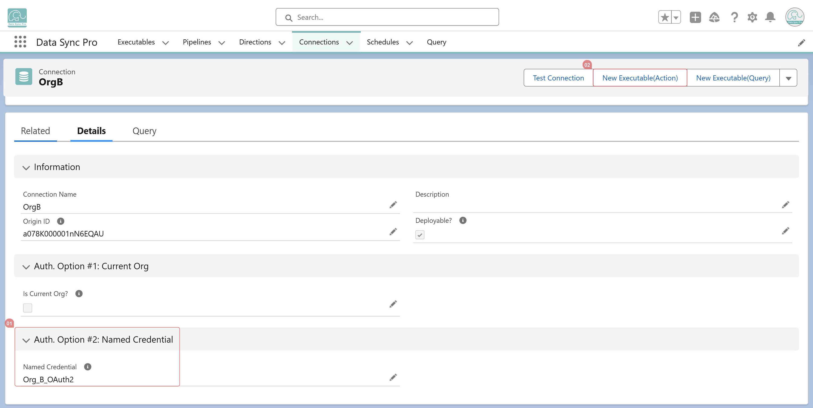

Yes. DSP unifies Connections, so creating a #Data Loader for a remote Salesforce org works the same way as for your current org. Simply select the remote Connection when creating the Executable and then follow the standard steps to configure the #Data Loader.
